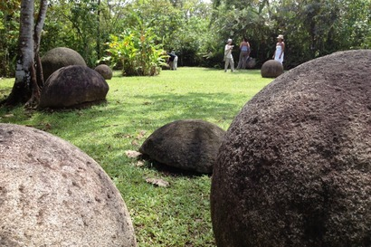

You made it!
This page exists for the purpose of showcasing the HTML skills I'm learning on Coursera. This is still the first project so I'm not using CSS or any fun tags, as such it'll look pretty basic.
There's a lot you can do with just basic HTML! Such as...

Hosting images, like photos! Or, if that's not your speed...
I always like a little music when I'm coding. But at the end of the day, we're keeping things pretty bare-bones here. If you're interested in something more technically impressive, I'd invite you to check out the other pages in the navigation listing at the top of the page.
Surely it's not just a tech demo, right? Well, it is. It's being made for a project and as such there are specifications it needs to fulfill. But, aside from that, it can still serve a purpose.
Across aeons, countless powerful figures in history and legend have been known for the magic of their orbs. Often these figures were mighty wizards, laying waste to entire armies and excersizing their will over vast swathes of land, land they could traverse with the slightest effort in the blink of an eye. While the term wizard is something of an oversimplification encapsulating many different kinds of people with incredible ability and even more incredible orbs, the uniting factor is clear.
The orb is a symbol of power and perfection, exhibiting no flaw or irregularity that could cause it to catch or irritate the hands of its wielder when they ponder and rub upon it to awaken its latent powers. It's simultaneously the most simple and most difficult of the three-dimensional shapes, presenting us with the human struggle of perfect design we can never achieve. It's a struggle that has existed for long before written history, as is clearly documented by the Costa Rican Spheres. (Find more about them online, they're a tangent I don't need to expound upon here)
With this in mind, this site serves as a way to catalogue the history and activities of a current orb-holder, a man by the name of Daniel George Hentschel. He's far from unknown (in our time) as he's had multiple interactions with many of our society's watchdogs and civilian reporters, but since the most recent contact with the FBI, I find it every sane citizen's duty to track how his Orb affects his life and uphold his innocence in future chaos caused by his improper handling of such a powerful object. One day this archive may well end up in court as evidence. With any luck, he'll learn to control it before it destroys him and all of us.
Read MoreThanks for visiting my site!